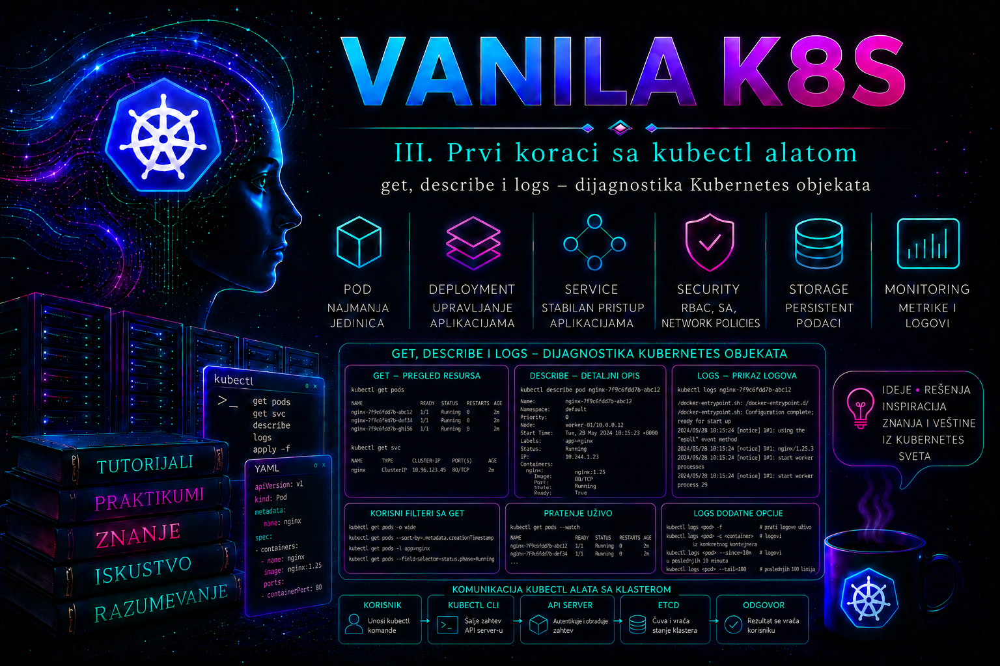

Vanilla Kubernetes

Kubernetes administrator početnu dijagnostiku ne započinje promenom objekata, već sistematskim prikupljanjem činjenica. Pre restartovanja Poda, izmene manifesta, povećanja broja replika ili pristupa worker čvoru mora da utvrdi šta API server zna o objektu, koje je željeno i stvarno stanje, koji su događaji zabeleženi, šta proces ispisuje na standardni izlaz i standardni tok grešaka i da li je sporno polje uopšte podržano u API verziji klastera. Komande kubectl get, kubectl describe, kubectl logs, kubectl events i kubectl explain zato čine osnovni read-only dijagnostički komplet.
Ove komande ne prikazuju istu informaciju. get čita resurse preko API servera; describe sastavlja čoveku prilagođen izveštaj iz konfiguracije, statusa i povezanih događaja; logs preko API servera i kubeleta preuzima izlaz konkretnog kontejnera; events izdvaja kratkotrajne operativne signale koje objavljuju komponente klastera; a explain čita OpenAPI šemu sa servera i objašnjava podržanu strukturu resursa. Nijedna sama nije potpuna istorija niti zamena za monitoring, audit, distribuirano praćenje i centralizovano logovanje.
Dijagnostički tok: od simptoma ka proverljivoj hipotezi
Pouzdan tok ide od najmanje invazivnih provera ka promenama: potvrdi identitet okruženja i vreme incidenta; odredi obim; pronađi vlasnički lanac; proveri konfiguraciju, status i uslove; koreliši događaje i logove; proveri zavisnosti; formuliši hipotezu; tek zatim planiraj minimalnu korekciju, rollback i validaciju. Ako je Pod Pending, aplikacioni log često ne postoji jer kontejner nije pokrenut. Ako je Running, ali Ready=False, proveravaju se probe, portovi, zavisnosti i log. Kod CrashLoopBackOff presudni mogu biti poslednje stanje, izlazni kod, termination message i logs --previous.
date -u
kubectl config current-context
kubectl config view --minify
kubectl cluster-info
kubectl auth can-i get pods -n diag-lab
kubectl auth can-i get pods/log -n diag-lab
kubectl auth can-i list events -n diag-lab
Sve su ovo read-only provere. Pristup Podovima i logovima nije isto ovlašćenje: RBAC tretira log kao podresurs pods/log. Log može sadržati tokene, lične podatke i poslovni sadržaj, pa dokaz treba vremenski ograničiti, redigovati pre prilaganja tiketu i čuvati prema pravilima retencije. Ako auth can-i vrati no, rešenje nije zaobilaženje kontrole već odobreno, najmanje potrebno pravo.
kubectl get – obim, inventar i strukturisano stanje
Podrazumevani tabelarni prikaz daje operativni sažetak, ne kompletan objekat. Kolona STATUS može biti izvedena iz stanja kontejnera i nije nužno jednaka polju .status.phase. YAML ili JSON prikaz obuhvata specifikaciju, serverski dopunjene vrednosti, metapodatke i status, ali može sadržati osetljive reference i obiman managedFields sadržaj.
kubectl get pods -n diag-lab
kubectl get pods -n diag-lab -o wide
kubectl get deployments,replicasets,pods,services -n diag-lab
kubectl get pod inventory-api-EXAMPLE -n diag-lab -o yaml
Za namespaced resurse eksplicitni -n smanjuje mogućnost greške. -A zahteva šira prava i u velikom klasteru može dati previše podataka. Label selektor predstavlja stabilniji izbor od dinamičkog imena Poda; field selektor radi samo nad poljima koja API konkretnog resursa podržava.
kubectl get pods -n diag-lab -l app.kubernetes.io/name=inventory-api
kubectl get pods -n diag-lab --field-selector=status.phase=Running
kubectl get pods -n diag-lab --sort-by=.metadata.creationTimestamp
kubectl get pods -n diag-lab \
-o custom-columns='NAME:.metadata.name,PHASE:.status.phase,READY:.status.containerStatuses[*].ready,RESTARTS:.status.containerStatuses[*].restartCount,NODE:.spec.nodeName'
Za automatizaciju se koriste JSON, YAML, JSONPath, Go template ili klijentski API, uz obradu praznih polja i nizova. describe se ne parsira. Opcija -w prikazuje buduće izmene posle početnog rezultata, ali nije istorijski zapis i prekid terminala prekida posmatranje.
kubectl get pods -n diag-lab \
-l app.kubernetes.io/name=inventory-api \
--watch
Normalno stanje zavisi od tipa workload-a: Completed je očekivan za uspešan Job, ali ne i za dugotrajni servis. Running ne znači automatski Ready, a stabilan trenutni status ne poništava rastući broj restartovanja.
kubectl describe – konfiguracija, status, uslovi i povezani događaji
kubectl describe prikazuje detaljan, čoveku prilagođen pregled objekta i povezanih resursa. Kod Deploymenta proveravaju se strategija, selektor, Pod template, željene i dostupne replike, conditions i događaji. Kod Poda: vlasnik, čvor, image i image ID, komanda, promenljive, portovi, probe, volumeni, init i aplikacioni kontejneri, waiting/running/terminated stanje, exit code, restart count, conditions, QoS, tolerations i događaji.
kubectl describe deployment inventory-api -n diag-lab
kubectl describe pod inventory-api-EXAMPLE -n diag-lab
kubectl describe service inventory-api -n diag-lab
Poruka Readiness probe failed: connection refused dokazuje neuspešan pokušaj kubeleta, ali sama ne razlikuje pogrešan port, spor start, slušanje samo na loopback adresi ili pad procesa. Za uzrok se korelišu manifest, status, događaji i logovi. Izlaz describe nije stabilan ugovor za skripte i može se menjati između verzija klijenta.
kubectl events – vremenski ograničeni signali komponenti klastera
Event je namespaced API objekat kojim scheduler, kubelet, kontroleri i druge komponente prijavljuju zapažanje: FailedScheduling, FailedMount, FailedCreatePodSandBox, ErrImagePull, BackOff ili neuspelu probe. Event nije aplikacioni log, audit zapis niti pouzdana hronologija: zapisi imaju ograničenu retenciju, ponovljeni događaji se agregiraju, vreme može biti predstavljeno kroz više polja, a nestanak Eventa ne znači da se problem nije dogodio.
kubectl events -n diag-lab
kubectl events -n diag-lab --types=Warning
kubectl events -n diag-lab --for pod/inventory-api-EXAMPLE
kubectl events -n diag-lab --for pod/inventory-api-EXAMPLE --watch
Komanda kubectl events je savremeni, pregledan interfejs i podržava filter --for. U starijim kubectl klijentima može izostati; tada se čita API resurs events. Sortiranje po .metadata.creationTimestamp je prenosivije od oslanjanja isključivo na istorijsko .lastTimestamp, koje nije popunjeno u svakom obliku događaja.
kubectl get events -n diag-lab \
--field-selector='involvedObject.kind=Pod,involvedObject.name=inventory-api-EXAMPLE' \
--sort-by=.metadata.creationTimestampZa incident se beleže razlog, poruka, izvor/reporting controller, broj ponavljanja, prvo i poslednje opažanje i identitet pogođenog objekta. Vremenske oznake se korelišu u istoj vremenskoj zoni sa rollout-om, auditom, metrikama i aplikacionim logovima.
kubectl logs – izlaz procesa u konkretnom kontejneru
kubectl logs prikazuje ono što proces piše na stdout i stderr; ne čita automatski proizvoljne fajlove u kontejneru. Zahtev prolazi preko API servera do kubeleta na čvoru. Zbog toga neuspeh može biti posledica RBAC zabrane nad pods/log, pogrešnog namespace-a ili kontejnera, nepokrenutog Poda, nedostupnog kubeleta, problema control plane–node, rotacije ili brisanja Poda.
kubectl logs inventory-api-EXAMPLE -n diag-lab -c web --tail=100
kubectl logs inventory-api-EXAMPLE -n diag-lab -c web --since=10m --timestamps
kubectl logs inventory-api-EXAMPLE -n diag-lab -c web --previous --tail=200 --timestamps
kubectl logs inventory-api-EXAMPLE -n diag-lab -c web --follow
--previous čita prethodnu završenu instancu istog kontejnera u istom Podu, ne neograničenu arhivu. Posle brisanja Poda ili rotacije lokalnih zapisa dokaz može nestati. Za više replika rezultat mora imati identitet izvora i kontrolisanu paralelnost.
kubectl logs -n diag-lab \
-l app.kubernetes.io/name=inventory-api \
-c web \
--all-pods=true \
--prefix \
--tail=50 \
--max-log-requests=5
Opcija --insecure-skip-tls-verify-backend slabi proveru identiteta kubelet backend-a i nije rutinski workaround; problem sertifikata ili komunikacionog puta treba ispraviti i eskalirati. Za produkcijski dokaz uvek se navode klaster, namespace, Pod, kontejner, aktivna ili prethodna instanca, UTC opseg i primenjeni filteri.
kubectl explain – provera API šeme pre pisanja ili ispravke manifesta
kubectl explain dobija opis polja i strukturu podržanog resursa iz serverske OpenAPI šeme. Njime se pre promene proveravaju tačna putanja, tip, značenje i API verzija polja. To je pouzdanije od kopiranja manifesta iz tutorijala za drugu verziju klastera, ali ne prikazuje nužno sve admission politike, CRD validaciona pravila ili organizacione zahteve konkretnog okruženja.
kubectl explain pod
kubectl explain pod.spec.containers
kubectl explain pod.spec.containers.readinessProbe.httpGet.port
kubectl explain deployment.spec.strategy --api-version=apps/v1
kubectl explain deployment --api-version=apps/v1 --recursive
Putanja koristi nazive polja iz šeme, bez indeksa niza. Za CRD resurse kvalitet rezultata zavisi od objavljene strukturne OpenAPI šeme. Ako klijent i server nisu kompatibilni ili API discovery/OpenAPI nije dostupan, rezultat može izostati; tada se proveravaju kubectl version, kubectl api-resources, CRD šema i zvanična dokumentacija za verziju klastera. explain je read-only i pripada pre-change validaciji, ali ne potvrđuje da će manifest proći admission niti da je konfiguracija operativno ispravna.
Kako razlikovati simptom, dokaz i sledeću proveru
| Posmatranje | Moguće značenje | Najbolji sledeći dokaz |
|---|---|---|
Pod je Pending, bez čvora | Nema odgovarajućih resursa, affinity/taint ograničenje ili vezivanje volumena | describe pod i Event razlog FailedScheduling |
Running, ali READY 0/1 | Proces postoji, ali readiness ne prolazi | Probe u specifikaciji, conditions, Events i vremenski ograničen log |
CrashLoopBackOff | Proces se završava, kubelet povećava razmak ponovnih startova | Last State, exit code, termination reason i logs --previous |
ImagePullBackOff | Image referenca, registry mreža/TLS ili imagePullSecret | Warning Events i bezbedna provera image reference i autorizacije |
| Deployment nema sve dostupne replike | Novi ReplicaSet nije spreman ili kreiranje Poda blokira kvota/admission | describe deployment, zatim ReplicaSet, Podovi i Events |
| Service postoji, nema spreman backend | Selektor ne odgovara ili EndpointSlice endpoint nije ready | Service selektor, Pod label-e i EndpointSlice conditions |
| Manifest polje je odbijeno ili ignorisano | Pogrešna putanja, tip ili API verzija | kubectl explain, OpenAPI/CRD šema i server-side dry-run |
Integrisani praktikum – dijagnostika nespremnog internog API servisa
Kontekst i cilj. Deployment inventory-api ima jednu NGINX repliku. Proces radi na portu 80, ali readiness probe namerno proverava 8080. Administrator treba da dokaže uzrok bez nasumičnog restartovanja, proveri šemu polja, primeni minimalnu korekciju, potvrdi EndpointSlice i HTTP funkciju i sačuva trag.
Preduslovi i rizik. Potrebni su laboratorijski klaster, funkcionalni DNS/CNI, kompatibilan kubectl, pravo kreiranja namespace-a i navedenih resursa i pristup registriju za nginx:1.27-alpine i curlimages/curl:8.10.1. Namespace se na kraju briše; korake ne izvršavati u deljenom ili produkcionom namespace-u. U produkciji promena ide kroz odobren GitOps/CI/CD/change tok.
-
Potvrdi cilj i prava.
date -u kubectl config current-context kubectl cluster-info kubectl auth can-i create namespaces kubectl auth can-i create deployments.apps -n diag-lab kubectl auth can-i create services -n diag-labValidacija: kontekst mora biti laboratorijski, API dostupan, a potrebna prava moraju vratiti
yes. -
Proveri šemu i kreiraj namerno neispravno stanje.
kubectl explain deployment.spec.template.spec.containers.readinessProbe.httpGet.port \ --api-version=apps/v1apiVersion: apps/v1 kind: Deployment metadata: name: inventory-api namespace: diag-lab labels: app.kubernetes.io/name: inventory-api spec: replicas: 1 selector: matchLabels: app.kubernetes.io/name: inventory-api template: metadata: labels: app.kubernetes.io/name: inventory-api spec: containers: - name: web image: nginx:1.27-alpine ports: - name: http containerPort: 80 readinessProbe: httpGet: path: / port: 8080 initialDelaySeconds: 2 periodSeconds: 5 timeoutSeconds: 2 failureThreshold: 3 resources: requests: cpu: 20m memory: 32Mi limits: cpu: 200m memory: 128Mi --- apiVersion: v1 kind: Service metadata: name: inventory-api namespace: diag-lab spec: selector: app.kubernetes.io/name: inventory-api ports: - name: http port: 80 targetPort: httpSačuvaj YAML kao
/tmp/inventory-api-lab.yaml, zatim izvrši:kubectl create namespace diag-lab kubectl apply --server-side --dry-run=server -f /tmp/inventory-api-lab.yaml kubectl apply -f /tmp/inventory-api-lab.yaml kubectl get deployment,service -n diag-lab kubectl get deployment inventory-api -n diag-lab -o yaml \ > /tmp/inventory-api-deployment-before.yamlOčekivanje: dry-run potvrđuje da je manifest sintaksno i šematski prihvatljiv; to ne potvrđuje da je port operativno ispravan.
-
Odredi obim i tačan Pod.
kubectl get deployments,replicasets,pods,services -n diag-lab kubectl get pods -n diag-lab -l app.kubernetes.io/name=inventory-api -o wide POD_NAME="$(kubectl get pods -n diag-lab \ -l app.kubernetes.io/name=inventory-api \ --sort-by=.metadata.creationTimestamp \ -o jsonpath='{.items[-1].metadata.name}')" printf 'Pod za dijagnostiku: %s\n' "$POD_NAME" kubectl get pod "$POD_NAME" -n diag-lab \ -o custom-columns='NAME:.metadata.name,PHASE:.status.phase,READY:.status.containerStatuses[0].ready,RESTARTS:.status.containerStatuses[0].restartCount,NODE:.spec.nodeName'Očekivanje: Pod je
Running, readiness jefalse, restart count tipično 0, a Deployment nema dostupnu repliku. Ako ima više Podova, svaki se procenjuje; ne bira se nasumično. -
Koreliši opis, događaje i log.
kubectl describe pod "$POD_NAME" -n diag-lab kubectl events -n diag-lab --for "pod/$POD_NAME" --types=Warning kubectl logs "$POD_NAME" -n diag-lab -c web --tail=100 --timestampsDokaz: specifikacija pokazuje container port 80 i probe port 8080; Event prijavljuje
Readiness probe failed/connection refused; log pokazuje da se NGINX pokrenuo. Nepostojanje aplikacione greške ne znači da je Pod spreman. -
Proveri Service backend i negativni CLI slučaj.
kubectl logs "$POD_NAME" -n diag-lab -c api --tail=20 kubectl get pod "$POD_NAME" -n diag-lab \ -o jsonpath='{.spec.containers[*].name}{"\n"}' kubectl get endpointslices -n diag-lab \ -l kubernetes.io/service-name=inventory-api -o yamlGreška za kontejner
apije greška zahteva, ne kvar Poda. EndpointSlice može sadržati endpoint saready: false; ClusterIP sam po sebi ne dokazuje funkciju servisa. -
Pripremi minimalnu korekciju i pregledaj razliku.
cp /tmp/inventory-api-lab.yaml /tmp/inventory-api-lab-fixed.yaml sed -i 's/port: 8080/port: 80/' /tmp/inventory-api-lab-fixed.yaml kubectl apply --server-side --dry-run=server \ -f /tmp/inventory-api-lab-fixed.yaml kubectl diff -f /tmp/inventory-api-lab-fixed.yamlValidacija: diff treba da pokaže samo port 8080 → 80. Status 1 komande
kubectl diffznači da razlika postoji; status veći od 1 ukazuje na grešku. U produkciji se menja izvor u repozitorijumu, ne privremena kopija. -
Primeni, prati i funkcionalno potvrdi.
kubectl apply -f /tmp/inventory-api-lab-fixed.yaml kubectl rollout status deployment/inventory-api -n diag-lab --timeout=120s POD_NAME="$(kubectl get pods -n diag-lab \ -l app.kubernetes.io/name=inventory-api \ --sort-by=.metadata.creationTimestamp \ -o jsonpath='{.items[-1].metadata.name}')" kubectl get deployment,replicaset,pod -n diag-lab kubectl get endpointslices -n diag-lab \ -l kubernetes.io/service-name=inventory-api -o yaml kubectl run inventory-client -n diag-lab \ --image=curlimages/curl:8.10.1 \ --restart=Never \ --command -- sh -c \ 'curl --fail --silent --show-error --max-time 10 http://inventory-api/ | grep -q "Welcome to nginx"' kubectl wait pod/inventory-client -n diag-lab \ --for=jsonpath='{.status.phase}'=Succeeded --timeout=60s kubectl logs "$POD_NAME" -n diag-lab -c web --since=5m --timestampsKriterijum uspeha: Deployment ima jednu dostupnu repliku; novi Pod je
Readybez restartovanja; EndpointSlice je ready; klijent završava u faziSucceeded; serverski log sadrži uspešanGET /u odgovarajućem vremenu. -
Rollback odluka i cleanup.
kubectl rollout history deployment/inventory-api -n diag-lab # Izvršiti samo ako odobren rollback kriterijum bude ispunjen: # kubectl rollout undo deployment/inventory-api -n diag-lab --to-revision=1 kubectl delete namespace diag-lab rm -f /tmp/inventory-api-lab.yaml \ /tmp/inventory-api-lab-fixed.yaml \ /tmp/inventory-api-deployment-before.yaml kubectl get namespace diag-labUpozorenje: rollback na reviziju 1 u ovoj vežbi vraća namernu grešku. Brisanje namespace-a uklanja sve njegove objekte. Završni
NotFoundje očekivana potvrda cleanup-a.
Troubleshooting grane i tipične greške
- Objekat „ne postoji”. Proveriti kontekst, namespace, vrstu i ime pre zaključka o brisanju.
- Pod je Pending. Ne tražiti aplikacioni log koji još ne postoji; prvo analizirati scheduler i volume Events.
- Log je prazan. Proveriti tačan kontejner, aktivnu/prethodnu instancu, da li proces piše na stdout/stderr i da li je Pod zamenjen.
- Events su prazni. To nije dokaz odsustva kvara; proveriti retenciju, vreme, namespace, pogođeni objekat, centralni monitoring i audit.
explainne nalazi polje. Proveriti API verziju, plural resursa, client/server kompatibilnost i CRD šemu; ne forsirati nepoznato polje.- Restart pre dokaza. Brisanje Poda može ukloniti prethodni log i promeniti identitet; prvo sačuvati status, Events, log i UTC vreme.
- Parsiranje
describe. Za automatizaciju koristiti strukturisani izlaz ili API. - Preširoko prikupljanje. Ograničiti namespace, selektor, vreme, broj redova i paralelnost; redigovati tajne i lične podatke.
Administratorske prakse
- Standardni incident snapshot. Pre promene sačuvati identitet klastera, UTC vreme,
get -o wide, strukturisani status, relevantnidescribe, Events i vremenski ograničene aktivne/prethodne logove. - Dokaz ispred hipoteze. Razdvojiti simptom, obim i posledicu od neposrednog i osnovnog uzroka; zapisati šta bi hipotezu potvrdilo ili opovrglo.
- Najmanja prava. Posebno kontrolisati
pods/log, Events i impersonation; periodično pregledati bindinge i audit pristupa. - Verzijska provera. Pre korišćenja polja ili zastavice proveriti
kubectl version, serversku OpenAPI šemu i generisanu CLI referencu za odgovarajuću verziju. - Centralizovana observability platforma. Pod log i Event su prolazni; produkcija zahteva retenciju, vremensku sinhronizaciju, oznake klastera/namespace-a/Poda/kontejnera i kontrolisanu pretragu.
- Validacija zatvorene petlje. Posle korekcije potvrditi API stanje, readiness, rollout, EndpointSlice, funkcionalni zahtev, relevantni log i odsustvo novih Warning događaja.
Završna kontrolna tačka
- Učenik razlikuje tabelarni status, API polja, conditions, Events i aplikacione logove.
- Može da odredi klaster, namespace, pogođeni objekat, vlasnički lanac, Pod, kontejner i vremenski opseg.
- Koristi
getza obim i strukturisane dokaze, adescribeza ljudsku analizu bez parsiranja njegovog izlaza. - Koristi
events --forili kompatibilniget eventsi razume ograničenu retenciju i agregaciju. - Čita aktivni i prethodni log sa ograničenim obimom i štiti osetljive podatke.
- Proverava polje i API verziju pomoću
explain, a manifest dodatno server-side dry-run postupkom. - Pre promene formuliše hipotezu, čuva dokaz, pregleda diff i definiše rollback kriterijum.
- Oporavak potvrđuje rollout-om, spremnim endpoint-om, funkcionalnim testom, logom i događajima.
Zaključak
Osnovna Kubernetes dijagnostika je disciplina povezivanja različitih dokaza. get određuje obim i daje strukturisano stanje, describe povezuje konfiguraciju i status, events pokazuje šta su komponente klastera opazile, logs otkriva ponašanje procesa, a explain proverava ugovor API šeme pre promene. Administrator mora razlikovati Running od Ready, trenutnu od prethodne instance kontejnera i prolazni signal od trajnog evidencionog sistema.
Bezbedna promena počinje potvrdom konteksta, ovlašćenja, vremena i činjenica, a završava se minimalnom korekcijom, funkcionalnom validacijom, proverom oporavka i dokumentovanjem uzroka. Brisanje Poda, isključivanje TLS provere, proširivanje RBAC prava ili nekontrolisano preuzimanje logova nisu neutralne dijagnostičke radnje.
Ove komande ne zamenjuju monitoring, audit, tracing, centralizovano logovanje, backup ni dijagnostiku čvora. Kada dokaz ukaže na kubelet, runtime, CNI, CSI, sertifikate, control plane ili poslovnu logiku aplikacije, odgovoran postupak je uredna eskalacija sa očuvanim dokazima, a ne nasumično menjanje stanja.